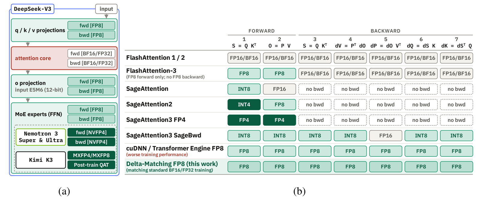
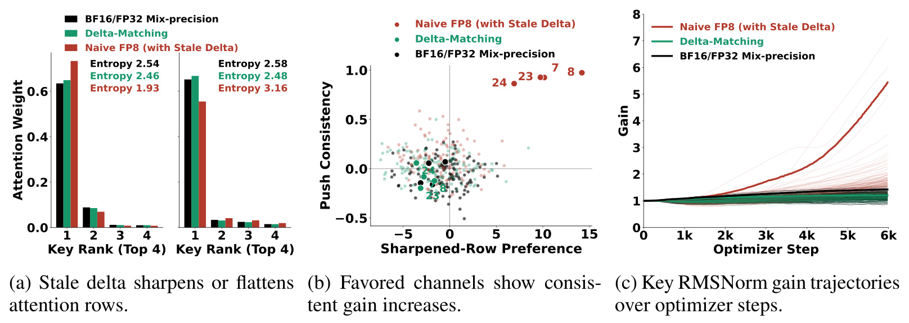
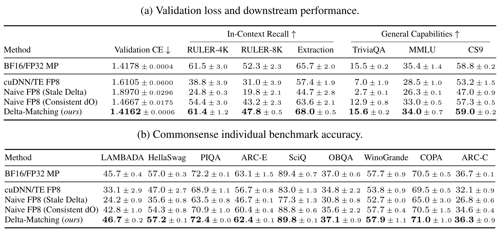
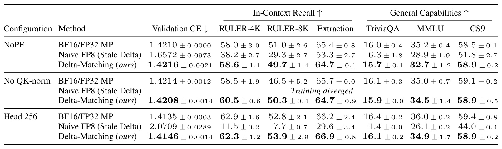
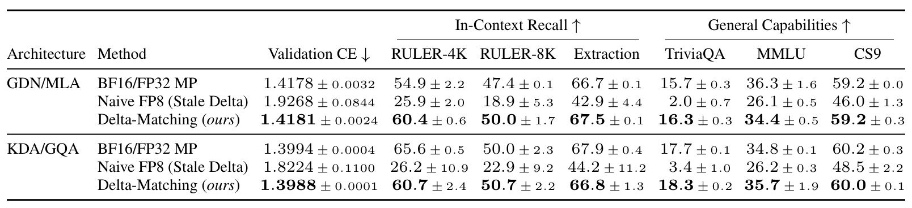
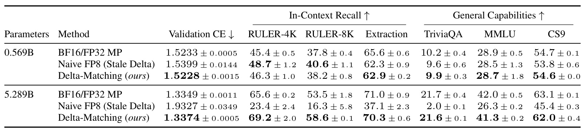
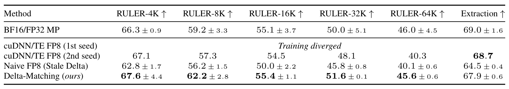
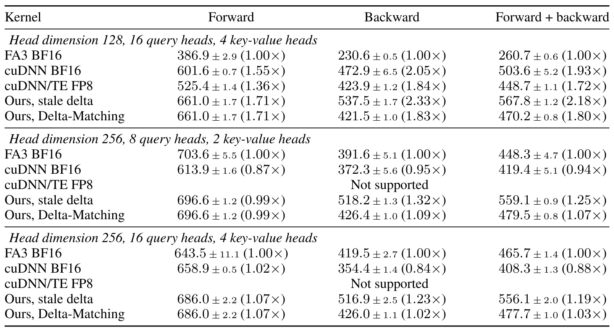

Delta-Matching：让 FP8 注意力的前向与反向重新对齐
Delta-Matching: Closing the Final Gap of Native 8-bit Training for LLMs 由 Haozhan Tang、Hao Kang、Han Cai、Song Han、Chenyan Xiong 撰写，机构为卡内基梅隆大学及合作方 NVIDIA、MIT。论文于 2026-09-29 公开 arXiv v1，本笔记在 2026-09-30 阅读完整 58 页论文及附录，关注大模型训练、低精度注意力与数值稳定性。作者承诺将发布实现、模型与数据配方；本次未核验到独立代码入口，不据此判断没有开源。
本文要解决的问题是：FP8 注意力前向和反向分别舍入后，原先依靠保存前向输出来计算 softmax 反向修正量的代数捷径不再一致，可能使梯度产生持续的结构性偏差；怎样在保留所有注意力核心矩阵乘法为 FP8 的同时修复这个偏差？
1. 背景和问题
低精度训练容易被概括成“把乘法从十六位换成八位”。这个概括对理解吞吐目标有用，对判断算法是否正确却远远不够。注意力不是一个孤立线性层，而是由打分、指数归一化、概率加权求和和反向传播构成的组合算子。不同阶段会对同一逻辑张量生成不同精度的表示，某些优化实现还会保存前向结果，在反向用它替代一次归约。实数域中完全等价的两段程序，放到量化链路中未必等价。本文把这种计算图上的等价性丢失具体定位到一个逐行标量 delta，而不是笼统归咎于八位浮点精度不足。这种定位使后续干预可以只改变修正量，保留其他核心乘法路径，从而获得比完全换架构更清楚的解释。
动机来自既有低精度系统中的一个空缺。线性投影与前馈网络已经广泛采用低精度矩阵乘法，但注意力核心常继续保留较高精度，特别是训练反向。只支持低精度前向的推理内核不能直接证明训练可靠；把训练状态压缩为八位也不是让注意力反向以八位计算。论文因此细分前向两次、反向五次核心矩阵乘法，把精度范围明确到每一次操作。研究的目标是让这些乘法使用原生分块缩放的八位操作数，而不是宣称整个模型的每个算子、优化器状态、通信和存储都变成八位。这个边界非常重要，因为后文 softmax、累加与归约继续依赖更高精度，甚至匹配修正量的部分归约使用双精度累加。
理解问题需要先认识 softmax 的平移不变性：给一行注意力分数全部加上相同常数，归一化后的概率不变。因此损失沿这个公共平移方向的梯度应该为零，即这一行分数梯度的和应为零。它不是一个为了“更稳定”而额外加入的正则项，而是原算子的数学性质。标准注意力反向会从每个概率梯度中减去一个由概率加权得到的均值，再乘上概率。这个减法确保梯度落在允许改变相对分数的方向上。若均值来自另一组不完全一致的操作数，梯度就会含有本不应存在的公共分量。一次偏差也许很小，但模型会反复更新，并可能把这种偏差转化为某些通道的增益增长。
FlashAttention 类实现为了节省中间张量存储，会在反向重新计算注意力概率；同时利用输出梯度与前向输出的内积，得到上述逐行均值。这在精确算术中成立，因为前向输出正是概率与值矩阵的乘积。进入八位路径后，前向输出来自舍入后的概率，而 softmax 反向仍使用舍入前的浮点概率；反向概率梯度还来自舍入后的输出梯度，而保存输出捷径可能仍读取未做同样舍入的输出梯度。于是概率与梯度两端各留下一个不一致来源。论文称这种已经不对应当前反向计算的修正量为 stale delta，可理解为“与反向操作数失配的旧修正量”，而不是时间上缓存了一次过期梯度。
为什么已有小模型和短训练实验容易漏掉它？本文在五亿级模型上观察到的验证损失差距较小，下游能力大体保留；到了十六亿和五十三亿级混合模型，初期训练仍可能贴近基线，随后才逐渐偏离。扩大批量、降低学习率或缩短训练时长可能改变偏差显现的时机，因此一次短期损失曲线重叠不足以证明方法可用。另一方面，某些纯注意力或 Mamba 混合结构能在内部增益明显异常时仍维持接近的最终损失。这说明仅看最终交叉熵也可能错过内部退化，必须把不变量残差、归一化增益、注意力分布和任务表现一起检查。论文并没有建立预测何时失败的定量法则，它给的是一组相互支持的数值推导和训练证据。
文章的主实验对象也决定了结论适用范围。基础模型约十六亿参数，交替堆叠十八层 Gated DeltaNet 和六层分组查询注意力，以三百亿 token 进行预训练。该选择让少数 softmax 注意力层承担混合架构中的检索功能，也便于观察注意力错误如何影响整体能力。作者进一步改变注意力头维度、归一化、位置编码、循环层类型、参数规模和训练阶段，试图排除问题仅属于某个局部配置的解释。不过这些实验还不是超大规模生产训练，不能凭最高五十三亿参数的结果声称所有大模型都已解决八位训练稳定性，更不能把某个内核计时当成训练集群吞吐收益。
这里还有一个很容易误读的词：“匹配”。作者要匹配的是反向计算内部实际使用的操作数与行修正量，进而在测试范围内接近 BF16/FP32 参考训练；并不是强制每个量化张量逐元素等于高精度张量，也不是把所有下游指标都做成同一个数字。主表中的八千长度检索分数仍低于参考模型。真正有价值的研究问题是：能否找出低精度误差中一个具有明确结构、可以单独修复的分量，并证明修复后大部分严重训练退化消失？按这个问题阅读，论文的贡献比“八位训练全面无损”更具体，也更便于复现。
从训练任务看，本文仍采用标准下一词预测，并没有引入新的知识监督或外部教师。因而评价修正方法是否有效，首先应比较相同数据、相同初始化和相同优化日程下的质量，而不只是比较算子局部误差。作者同时测量闭卷问答、常识选择和上下文抽取，正是因为注意力承担的长程信息调用未必能被平均语言建模损失充分表达。对读者而言，这些任务覆盖提供了互补证据；它们却不代表经过指令微调后的对话能力、工具调用表现或线上业务收益，本文也没有声称完成了这些验证。
还应把训练参考的名字与实际精度配置区分开。论文某些 BF16/FP32 注意力参考本来就使用八位前馈网络，另一些头维度实验才保留高精度前馈。因此参考模型不是统一的全高精度基线。正确比较要回到各实验的模块精度表，避免把投影层、前馈层和注意力核心同时变化时产生的差异全部归因于单一行修正。
2. 方法
2.1 七次矩阵乘法与 softmax 的职责
注意力先形成分数、概率与输出，反向再把输出梯度传回值、概率、分数、查询与键。下式合并原文背景中的前向与反向链，省略掩码书写但仍按因果可见位置计算。softmax 行归一化保留 FP32，是整个修正推导的基础。 为避免存储完整概率，反向会再次计算分数，因此总共统计到七次核心矩阵乘法，而不是前向两次加反向四次。
符号解释：查询、键、值分别为 $Q,K,V$，头维度为 $d$；$dX$ 表示损失对张量 $X$ 的梯度，$\odot$ 是逐元素乘法，$\delta$ 沿行广播。分数与概率的维度包含查询位置和键位置，输出及其梯度则包含查询位置与值通道。这里的反向公式是目标关系；进入低精度实现后，必须进一步说明每个输入究竟是原值还是解码后的量化值。

Figure 2 左半部分区分了线性投影、注意力核心与前馈专家，这能解释为什么一套系统即使已经大量使用八位或四位乘法，仍然没有解决本文问题。右半部分按算子列出精度：前向的打分和概率乘值只是前两列，反向除了重算打分，还要计算值梯度、概率梯度、查询梯度和键梯度。某些方法仅覆盖前向；某些方法把最敏感的概率梯度乘法保留较高精度。本文保持所有七列为八位，但通过不同的行归约来校正反向。读图时需要把操作数精度与累加器精度分开，矩阵两端输入八位不意味着中间累加和指数函数也八位；表格也不涉及优化器状态和归一化层。图中的 cuDNN 路径同样覆盖七列，因此单看精度表无法判断训练质量，真正差异还要看修正量是否对应实际反向操作数。
它也提示复现时不能拿仅支持推理的路径直接当训练基线，或者把某一列高精度保护带来的稳定性归功于全面八位化。对工程实现而言，这张路径图应当转化成逐算子的精度登记：输入编码、缩放粒度、累加方式、输出存储和重新计算时是否复用同一组编码，都影响后面的恒等式是否成立。作者的突破位置集中在这些乘法之间的标量修正连接，而不是提出一个新的注意力结构或改变序列任务本身。因此读者可以把本文方法与前馈低精度训练组合，却不能由这张图推断循环状态、归一化或优化器的精度也发生相同变化。图中比较范围是注意力乘法路径，后文训练精度配置表给出的整模范围还要单独核实。
2.2 保存输出捷径为何出现两种失配
先从不变量推导。归一化概率每行和为一，因而加权均值恰好消去分数梯度的行和。接着，为量化张量加帽，表示包含块缩放因子的解码值。旧修正量继续用未进行同样八位舍入的输出梯度，与量化前向产生的输出相乘。代数捷径成立的条件是前后两条路径在同一组有效操作数上计算，而不是它们在代码中具有同一个变量名。
符号解释：$i$ 是查询行，$j$ 是可见键位置；$\delta_i$ 是概率梯度的概率加权均值。这一原文公式一要求概率归一化，等号零是在精确算术下成立，有限精度实现需单独度量残差。
符号解释：帽号是 FP8 编码解码后的有效数值，$\widehat O$ 与 $\widehat{dP}$ 在理想分析中使用浮点累加结果；$dO$ 为舍入前输出梯度。这里刻意保留 $P$ 与 $\widehat P$ 的区别，后者进入前向乘法，前者进入 softmax 反向，两者不能互换。
符号解释：$k$ 为值通道，$\varepsilon_i$ 是行和残差。第一项对应概率舍入，第二项对应输出梯度舍入。原文公式二及附录十三假设前后使用相同有效值矩阵、概率精确归一化，并忽略累加、归约及输出存储舍入；因此它拆解的是操作数量化误差，而不是穷尽真实内核全部数值误差。
如果只把旧修正中的输出梯度改为与反向乘法相同的量化值，第二项会消失，第一项仍在。这正是 consistent dO 基线的含义。它不是没有作用，主实验中损失明显恢复；但它不能保证概率均值与前向量化概率一致。论文用这个有针对性的中间方案证明，两类误差并非只要处理其中一个就能完全消除。即使两项在某些行互相抵消，也没有理由期待它们在所有数据、训练步骤和参数配置上持续抵消。
符号解释：该式对应原文公式三，左侧已统一输出梯度精度，右侧仍是概率失配项。它说明用更准确的前向输出也不是充分条件，因为修正量最终必须服从正在执行的反向操作数，而非另一条更高精度的前向路径。
2.3 从反向操作数重建 delta，并区分数学保证与内核实现
Delta-Matching 直接按反向概率梯度的加权均值重建修正量。给定概率与概率梯度，如果每行只允许减去一个标量，且概率行和为一，那么令分数梯度行和为零的标量是唯一的。这个选择不要求增加一份辅助高精度前向输出，也不要求把某次注意力乘法升级成高精度。它只要求修正量真正读取参与反向的概率和乘法结果，因此修复的是关系而非孤立张量的误差。
符号解释：matched 表示与当前反向计算匹配，对应原文公式四和五。最后一个等号只在归一化及理想算术条件下成立，实际实现先达到接近浮点舍入的残差水平，之后分数梯度再转八位仍会重新引入非零残差。
符号解释：$\eta$ 表示小步长更新尺度，第二式用于解释局部分数更新，而不是把完整参数优化器当作直接更新分数。若 $\varepsilon_i<0$，旧修正额外抬高本来概率大的位置，倾向尖锐化；若其为正，则倾向平坦化。不同查询行残差即使近似相消，也可能对特定通道形成同向压力，这就是后文增益探针的动机。
符号解释：$c$ 是键通道。原文公式十四把分数梯度零行和转换成键梯度跨位置的零和性质，适用于进入打分乘法的查询与键；经过位置相关的逆旋转后，旋转通道不再必然保留这种抵消，不能把所有非零键公共分量都判为错误。
真实实现比上面的恒等式更细。附录中查询预先吸收缩放，键按序列位置减均值，再进行分块 E4M3 量化；前后复用输入编码与尺度。修正单独重算概率和概率梯度，对每个三十二键分组做浮点归约，再以双精度累加组间部分和，最终保存单精度标量。后续梯度路径存储八位分数梯度块，因此当前实现并没有消除平方级中间存储。概率通过指数与保存的归一化统计重建，没有显式再次归一化，这也解释为什么理论的严格零只能在实现中接近。修正阶段与梯度阶段必须在缩放、累加窗口、截断和操作数上尽量一致，否则单独一条看似正确的公式仍可能计算出另一套有效均值。这个工程约束比替换一行代码更重要，也是论文保留逐层残差诊断而不只展示损失曲线的原因。
3. 实验结果
3.1 先观察梯度和增益，而不只观察损失

Figure 3 把失配影响分为三个层次。左侧从相同的八位前向分数出发比较两种反向修正，因此旧修正与匹配修正之间能较清楚地隔离反向差异；参考曲线则来自高精度前向，不能把它与八位路径的差异全部归因于 delta。一个被选中行在旧修正下更尖锐，另一个更平坦，说明错误不是固定方向的“注意力熵下降”，而取决于残差符号。图上只显示最重要的四个键，熵却对整行计算，不能根据四根柱子的总和重新解释熵。作者还限制了探针行的前向分布差异，并选择能说明机制的特定样本，因此这里是诊断案例，不是所有注意力行的随机平均效果。
中间散点把偏好被尖锐化行的通道，与该通道当前优化器产生的向上更新压力联系起来。旧修正中的若干通道同时落在强偏好与持续增益上升区域，而匹配修正与参考模型没有相同程度的集中。右侧记录真实训练中的键归一化权重，通道七在六千步附近约为五点四，而匹配修正约一点二。三幅面板共同支持局部残差可以转化为结构性通道漂移，但中间横轴是描述性统计，头之间相关性没有被充分计入标准误，不能当作严格显著性检验，也不能把横纵轴关联等同于因果贡献的精确分解。附录还说明不同运行的增益日志有一步时间偏移和存储精度差别，这些足以影响细小差异，却难以解释如此明显的长期增益增长。
数值探针提供另一层支持。原文 Table 10 在相同非零梯度行集合上测量行和除以梯度绝对值和的残差，旧修正在量化前约为百分之一到百分之四点七，匹配修正则降到约千万分之一量级。分数梯度重新转成八位后，匹配修正残差回升到约千分之二点七至千分之三点四；旧修正跨层仍大约高五点三至六点三倍。这里不能写“梯度误差全部清零”，因为量化后残差甚至可能有带符号偏移。探针只覆盖一个初始化的两个最终检查点、三十二个窗口和一种头维度，也没有直接重放整个训练轨迹。它给出的坚实证据是修正前后内部一致性显著改善，而不是无偏梯度或任意训练收敛的证明。
3.2 主对照：只统一输出梯度还不够

Table 1 是最应优先读的实验，因为它包含旧修正、只统一输出梯度、完整匹配和供应商实现。基础模型在三百亿 token 上训练，主体结果为两个初始化种子的均值加标准误。旧修正的验证交叉熵为 1.8970，而 BF16/FP32 参考为 1.4178；consistent dO 降到 1.4667，说明移除梯度精度不一致很有效，但仍留下明显差距。完整匹配达到 1.4162，与参考接近。这个分层干预比只比较两个最终模型更有解释力：它把理论中的两个误差来源和训练后果对应起来，支持概率失配也需要处理。不过不同配置间的投影精度也有差异，最干净的对照是共享八位实现与精度范围、仅更换修正方式的实验臂。
下游不是所有项目全胜。匹配修正的 RULER-4K 为 61.4，参考为 61.5；RULER-8K 为 47.8，低于参考的 52.3，差四点五个百分点。抽取任务均值是 68.0 对 65.7，TriviaQA 是 15.6 对 15.5，MMLU 是 34.0 对 35.4，九个常识任务平均为 59.0 对 58.8。合理表述是整体能力大体恢复，并存在具体任务差距，而不是全面超越高精度训练。下半张表把常识均值展开，匹配方法与参考各单项均值相差不超过一个百分点，这能防止平均值掩盖某个任务的大幅下降；但两种子仍不足以覆盖稳定性尾部风险，小于误差条的差别不应被宣传为确定优势。
评测协议同样值得保留。所有模型统一导出并以 BF16 路径评测，避免把训练质量与低精度推理误差混在一起。RULER 是作者重新生成的十三项任务，每项每个长度五百样本，部分检索语料和生成器经过修改，因此不能直接与公开排行榜分数横向比较。Extraction 是三个数据集的平均子串召回，并非统一的精确匹配或 F1；常识均值是九个不同基准的无权平均。误差条只反映初始化种子间变化，不含基准样本抽样不确定性。把这些口径写清后，表中的大幅恢复才有正确的比较对象：它是相同评测路径下训练方式的对照，不是一个全新通用模型在榜单上的排名。主文 Figure 1 的曲线进一步表明，旧修正不是从头就完全学不动，而是在一段初期正常下降之后偏离，最终损失与本表验证损失的区别也应保留。
3.3 归一化、位置编码和头维度不是根治方案

Table 2 分别删除位置编码、删除查询键归一化，以及把头维度扩大到二百五十六。删除位置编码那组中，旧修正验证损失仍为 1.6572，参考为 1.4210，匹配修正为 1.4216。这个结果表明位置旋转不是出现退化的必要条件，但不能进一步说模型完全没有位置信息：作者只删除 softmax 注意力层的 RoPE，Gated DeltaNet 循环层仍对顺序敏感。对应 Figure 4 的训练曲线显示退化延迟而没有消失。因此通过关闭位置编码观察到早期损失更稳定，最多说明误差与结构发生交互，不能证明不变量失配已经修好。
去掉查询键归一化后，旧修正训练发散，而完整匹配的验证损失为 1.4208，接近参考的 1.4214。保留归一化能够缓解最坏崩溃，却不足以消除主表里的质量差距；这区分了约束前向打分尺度与修复反向均值两种作用。头维度二百五十六时，旧修正损失达到 2.0709，匹配修正为 1.4146，参考为 1.4135。读这一行不能仅凭头更宽就预测量化更安全，因为缩放、块几何和累加路径都可能随维度改变。论文在这组实验保留较高精度前馈与投影，精度范围与前两组并不相同，应该在各组内部比较，不宜把跨组损失差异解释成单变量因果效应。
这些变体共同排除了几种过于简单的工程判断：只要归一化足够强、只要不用旋转位置编码、或者只要扩大头维度，就能安心沿用保存输出的旧公式。作者的结果并不否认这些措施在其他稳定性问题上有价值，而是说明它们没有触及这里的反向操作数一致性要求。匹配修正在三组验证交叉熵上均与参考相差不超过 0.0011，但下游个别指标仍有偏低，例如无位置编码组 MMLU 的均值。因而此处最强结论是同一修正原则在多种注意力设置下保持有效，尚不是所有架构超参数都获得相同下游效果。复现实验时应同时报告是否保留循环层顺序性与各模块精度，否则“无位置编码”和“全八位”的名称都会产生误导。
3.4 跨架构结果与损失能够掩盖的退化

Table 3 把基础混合模型中的两个组成部分分别替换：一组把分组查询注意力换成多头潜在注意力，另一组把循环层换成 Kimi Delta Attention，并调整前馈宽度保持参数量近似可比。匹配修正只作用于 softmax 反向，不修改循环更新方程，因此这组实验是在检查问题是否依赖某一种混合层搭配。GDN/MLA 的旧修正验证损失为 1.9268，参考为 1.4178，匹配修正为 1.4181；KDA/GQA 分别为 1.8224、1.3994 和 1.3988。两组都显示旧修正存在明显质量缺口，而匹配修正把验证损失带回参考附近。对应 Figure 5 在两个架构上都呈现先跟随、后产生缺口的训练轨迹，这说明发现并非只对基础组合有效。
下游仍需要逐项理解。GDN/MLA 的 RULER-8K 从旧修正 18.9 恢复到 50.0，参考为 47.4；KDA/GQA 则从 22.9 恢复到 50.7，参考为 50.0。但是后者四千长度 RULER 只有 60.7，低于参考 65.6。其他指标也有上下波动，因此“恢复整体质量”准确，“所有任务收益一致”不准确。循环模块和潜在注意力改变了模型如何保存与调用上下文信息，检索任务差异可能与这些分工有关；论文没有进一步将每个差距归因到某种能力组件，笔记也不能把这种猜测写成已验证结论。该表中的种子数仍为二，且不同架构使用相同总 token 不等于相同优化难度。
附录对纯 GQA 和 Mamba 混合模型给出更有启发的反例：旧修正有时最终损失接近参考，但末层增益已明显膨胀。在一个二十五亿级纯注意力单种子探针中，旧修正的最大查询键增益乘积约 878.9，参考约 2.2；遮蔽末层注意力输出的损失代价却仅 0.0008，参考为 0.0302。作者据此认为其他层可能在补偿受损层，但并未识别具体补偿组件。这个探针不能与主表双种子均值混用，也不能把从较小纯注意力模型到更大模型的变化单独归因于规模，因为头几何、精度范围和实现也改变了。它真正强化的是验收原则：最终损失良好不等于内部注意力数值健康，长期大规模训练前值得检查逐层增益与功能依赖。
3.5 规模与更新次数改变错误的可见性

Table 4 在相同三百亿 token 预算下比较两个参数规模。五亿级模型上旧修正损失 1.5399，参考 1.5233，差距约 0.0166；匹配修正为 1.5228。旧修正的若干检索均值甚至高于参考，这说明小规模最终评测很可能给人“量化基本没问题”的印象。到了五十三亿级，旧修正损失 1.9327，参考 1.3349，差距接近 0.6；RULER-8K 从参考 53.5 跌至 16.3，常识均值从 63.1 跌至 45.4。匹配修正的损失为 1.3374，八千检索 58.6，常识均值 62.0，整体恢复明显，但也不是每项超越参考。
这组结果尤其提醒读者不要把最终 token 数量相等当作训练风险完全可比。模型规模改变了梯度统计、可表达结构与误差传播途径；Figure 6 中更大模型较早显现退化，与更新误差累积的解释一致，却还不足以建立一个可外推的参数量阈值。作者没有训练更多连续规模，也没有给出数万亿 token 的长程验证，因此不能从两端点拟合“超过某规模必然失败”的规律。匹配方法在两个规模上验证交叉熵与参考差距不超过 0.0025，是当前实验证据；更大模型或更久训练中的稳定性仍需另外确认。五十三亿模型的 MMLU、抽取与常识均值略低于参考，同样应该保留在收益叙述里。
附录的大批量实验进一步把 token 预算和更新次数分开。在固定三百亿 token 下，把每步约一百万 token 翻倍，更新总数减半；共享初始化的旧修正相对匹配修正最终损失差距从约 0.6866 降到 0.2078，但没有消失。较大批量甚至在更少更新后开始恶化，之后更早进入按更新数计的学习率衰减，所以不能解释成每次更新的量化误差变小。匹配更新数的某个区间两者差距相近，支持误差与更新过程相关的叙述，但仍存在学习率日程交互。较大批量只有一个种子，而标准批量有三个，误差条来自不同来源时也不能直接对照。这些细节让论文对小模型短测试的警告更可信，同时避免把相关模式夸大成精确训练动力学定律。
3.6 扩展到长上下文不意味着其他能力保持不变

Table 5 的训练起点很关键：每种方法都从对应初始化已经完成的同一个高精度参考检查点开始，而不是从各自预训练结束的模型继续。这避免把旧修正在第一阶段已经损失的能力带入第二阶段，适合测试上下文扩展本身的数值稳定性。训练用 ProLong 衍生数据，二万八千步，峰值学习率降至 0.0008，每步总 token 数保持约一百万。匹配修正的六万四千长度 RULER 为 45.6，参考 46.0，旧修正 40.1；四千到三万二千各长度上，匹配修正也优于旧修正。Extraction 为 67.9，仍低于参考 69.0。这里的接近来自相同长上下文评测协议，不能据此声称本文分数与其他论文的原始 RULER 榜单可比。
低学习率没有让旧修正彻底安全，Figure 7 中损失差距在约一万九千步后才明显超过 0.01。论文诚实指出，一万八千步时扩展了训练语料范围，并重置了供应商实现的幅度历史，因此恶化时机无法单独归因于训练时长或学习率。供应商路径两个种子中一个发散，另一个完成，表中分开列出，不能把存活种子当作双种子平均，也不能将发散行默默删除后比较均值。匹配修正在这两个种子上完成并跟随参考，是有限实验下的可靠性证据；对于更复杂的数据切换、检查点恢复与尺度历史管理，还需要独立的系统验证。
长上下文检索改善也没有保证通用能力不退化。附录 Table 23 中，高精度参考与匹配模型在扩展后都损失了 MMLU 和 TriviaQA 表现，匹配模型的 TriviaQA 均值为 2.9，参考 4.7，且种子间波动较大。旧修正此时 TriviaQA 反而较高，但其检索指标和常识均值较差，因此不能从单一任务给整个训练方法排总榜。这个现象提示上下文课程的数据与目标分布也会影响能力保留，数值修正并不负责解决所有阶段迁移问题。对实际长上下文模型，应分别验收数值稳定性、长文召回和原有知识问答能力，必要时设计更合理的数据混合；后者是基于证据的工程延伸，不是论文已经实施并验证的方案。本文贡献依然集中于使扩展训练的八位注意力接近相同课程下的高精度参考。
3.7 内核吞吐收益与尚未证明的系统收益

Table 11 报告单张 H100 SXM 上两个八千 token 序列的因果注意力内核吞吐，包含三种头几何。头维度一百二十八时，匹配方法的前向加反向为 470.2 TFLOP/s，FA3 BF16 为 260.7，对应约一点八倍；但 cuDNN BF16 为 503.6，反而比匹配方法更高。维度二百五十六、八查询头时，匹配方法相对 FA3 只有约一点零七倍；十六查询头时约一点零三倍。必须同时读各个基线和形状，不能只挑最大比值作为整体训练加速。旧修正内核更快，但会造成模型质量退化，因此其吞吐不是可直接替代的质量等价基线。
匹配方法的独立修正阶段确实有开销，作者估计它让旧修正反向时间增加约百分之二十一到二十八。更重要的是计时边界不完全对称：作者实现使用预量化输入，排除了输入量化和自动微分封装开销；BF16 基线包含封装开销，供应商 FP8 还包含输入转换。作者认为量化可与相邻算子融合，这是一项潜在实现机会，不是该表已测到的端到端事实。吞吐分子还采用统一的名义注意力浮点操作量，额外修正计算只增加时间而不增加计功，所以这里衡量的是给定算子任务的处理效率，并非芯片峰值利用率的完全同口径比较。复现时应保留预热、五轮交错测量与各轮中位数方案，同时补测完整训练步。
因此系统结论应保持克制：该内核证明全部注意力核心乘法八位化之后，增加正确修正仍可能保有有用吞吐，但本文没有建立分布式训练或端到端显存收益。当前实现保留平方级分数梯度块存储，也没有与保留 BF16 概率梯度乘法的质量保持方案做运行时对照。针对部署决策，真正需要追加的是完整算子图的量化转换、激活检查点、通信、优化器与数据输入时间，以及相同质量条件下的峰值显存和训练步耗时。论文在附录已明确这些限制，不能用硬件峰值八位吞吐接近两倍来替代这些测量。对于头维度不同或平台不同的系统，收益还可能改变方向；先验证正确性，再在完整边界内算收益，比只拿一个内核速度排名更能指导实际使用。
4. 总结
Delta-Matching 的核心贡献，是把一个低精度训练故障压缩为可推导、可干预、可测量的反向一致性问题。保存前向输出的快捷公式在实数域中成立，在分开舍入的计算图中却可能失效；直接用反向概率和反向乘法结果构造加权均值，可以恢复量化前的 softmax 梯度零行和。这个修正不改模型结构、不减少全局批量，也不要求额外高精度前向输出。主实验通过旧修正、统一输出梯度、完整匹配三级对照，把理论分解和训练后果连接起来，这是比“某个量化配方效果不错”更可复用的知识。
对于做大模型训练的工程团队，最值得带走的不是某个固定阈值，而是一种检查数值关系的方式。当融合算子通过缓存或代数变形减少计算时，应问等式两边是否仍共享相同有效操作数、块尺度和舍入路径。只检查每个张量的最大误差或均方误差，可能漏掉整体梯度中的有方向分量。本文示范了从局部不变量到通道增益、从最终损失到遮蔽探针的验证链。迁移到其他量化算子时，可以借鉴这条排查路径，但不能直接沿用 softmax 的零行和公式，因为别的算子具有不同结构；需要重新找出对应数学约束。
证据强度应分层看待。给定概率归一化和理想算术条件，匹配标量的唯一性是数学结论；有限精度内核中的残差下降是实测结论；在测试架构、最高五十三亿参数与三百亿 token 下整体能力接近参考是经验结论。任意架构收敛、万亿 token 稳定训练、量化后无偏梯度和端到端显著提速，则都没有被这篇论文证明。特别是分数梯度重新量化会引入非零残差，主表八千检索低于高精度参考，纯注意力内部异常也可能被其他层补偿。这些反例不是附带瑕疵，而是决定应如何解释“可靠八位训练”的组成部分。
复现优先级可以围绕三个问题展开。首先固定操作数、初始化和数据顺序，检查自己实现的行残差以及修正阶段与真正梯度阶段是否一致；其次延长训练并扩大至少一个参数规模，结合增益轨迹和多项下游评测，避免只凭几百步稳定损失验收；最后才测包括转换、封装、通信和优化器在内的完整训练成本。若只在短期小模型上做数值单测，可能错过论文最强调的迟发退化；若只测高速内核，则可能把需要牺牲模型质量的路径误判为优化成功。这里是基于本文结果形成的复现建议，尚不是当前笔记完成的独立训练复验。
开源与外部有效性仍是后续关注点。作者承诺发布实现、检查点与数据配方，本次事实核验尚未获得独立代码入口，因此对内核的理解来自论文附录，而不是运行过作者代码。主实验通常只有两个初始化种子，Muon 扩展实验只有一个，并且归一化增益仍由 AdamW 更新；不能把它说成所有优化器下已经普遍验证。实际应用还需要确认硬件、量化布局、累加策略与上游生产张量路径是否相容。最合理的定位是：这是一篇把八位注意力可靠训练向前推进的数值机制研究，给出了很明确的修复原则和丰富反证，却仍把系统级速度、内存收益及更大规模的可靠性留给后续实现和检验。